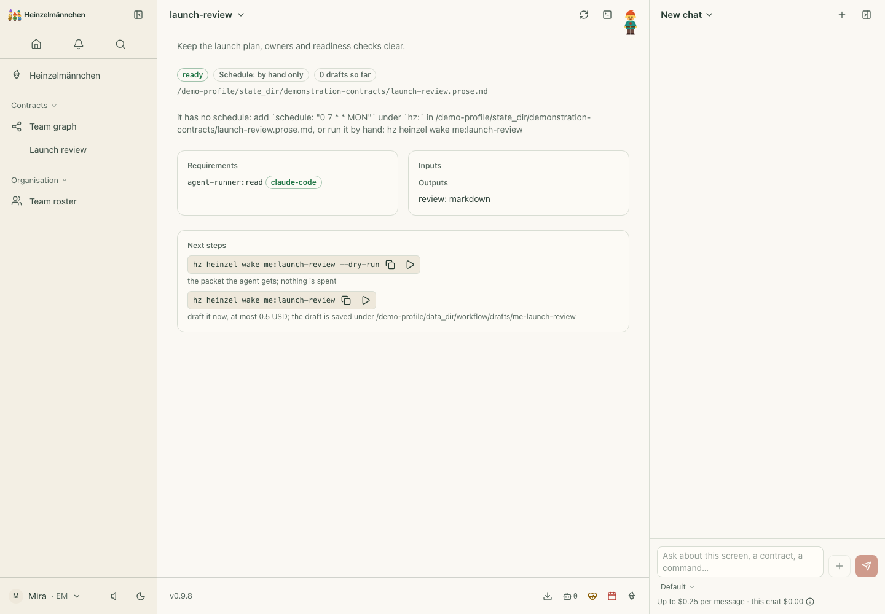
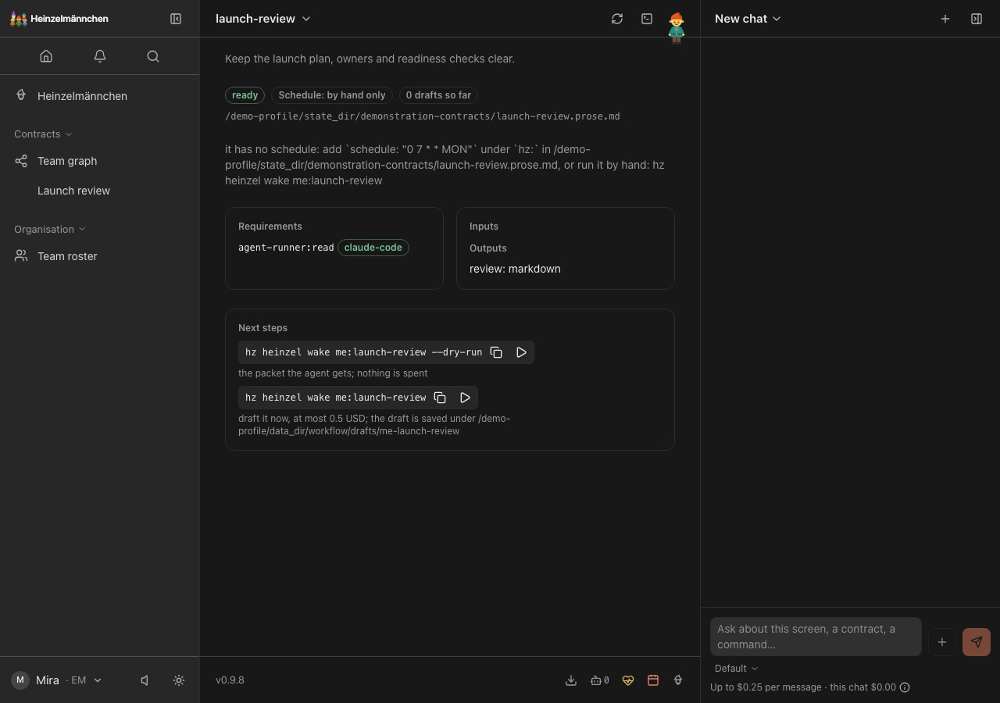
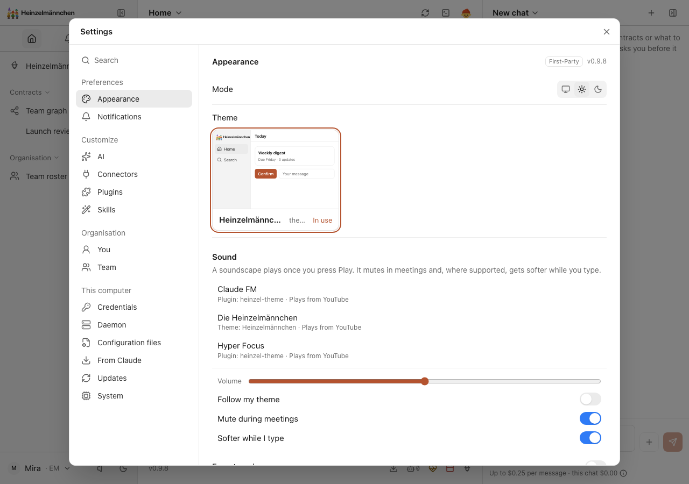
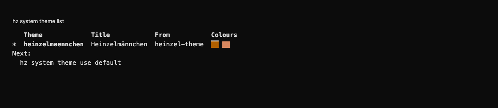
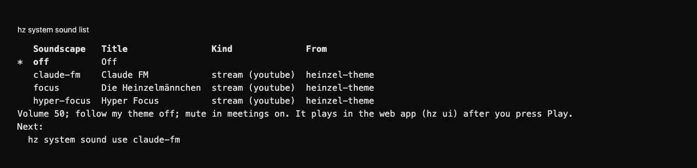

heinzel-theme
Isolated demonstration profile · Core 0.9.8 · Review these captures before committing. Click an image to inspect it at full size.

UI · A fictional Launch review contract, its configuration and run commands, in the applied Heinzelmännchen light theme.
UI · The same fictional Launch review contract in the applied Heinzelmännchen dark theme.
UI · Demo profile: browse three optional YouTube soundscapes; playback starts only after Play.
CLI · Demo profile: list available themes and identify Heinzelmännchen from the CLI.
CLI · Demo profile: list Claude FM, Die Heinzelmännchen and Hyper Focus without starting playback.